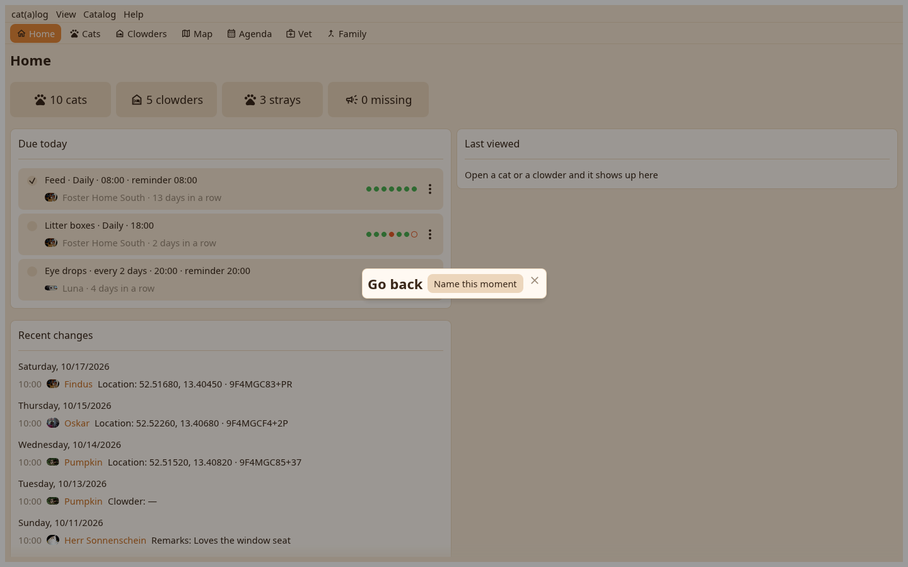

The housekeeping pages from the Catalog menu: moments, backups, restore, archive, moderation.

Before an import, a sync, a merge, an archive, a hard delete, and by hand with a name. Going back writes what it removes to a file first.
A full copy of every catalog, with photos, is written to your Downloads folder when you leave the app after changes. Restore lists the backups, one row per catalog, and brings each back as its own catalog.
Deceased cats and empty homes quiet for the time you choose, written to a file and deleted everywhere you sync; the file restores them.
The authors whose entries reached this catalog with their key codes; a hard delete drops a person's material on this machine, a ban keeps it from coming back.